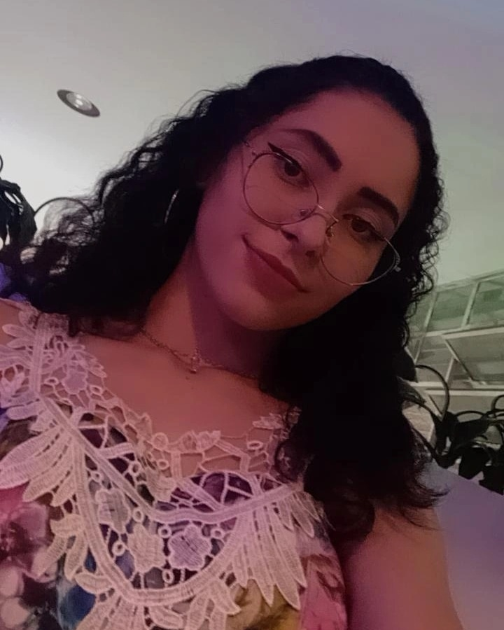

Andressa dos Santos, 16 anos, iniciou no primeiro semestre de 2022 o EMI (Ensino Médio Integrado) no Instituto
Federal de Educação, Ciência e Tecnologia - Campus Erechim.
Ainda nas primeiras turmas integradas, o IFRS busca formar jovens que cursam o ensino médio juntamente com um
curso técnico. Atualmente, para o integrado, temos 2 opções de aprendizagem: Informática e Mecatrônica.
Para mais informações sobre o IFRS - Campus Erechim, clique aqui